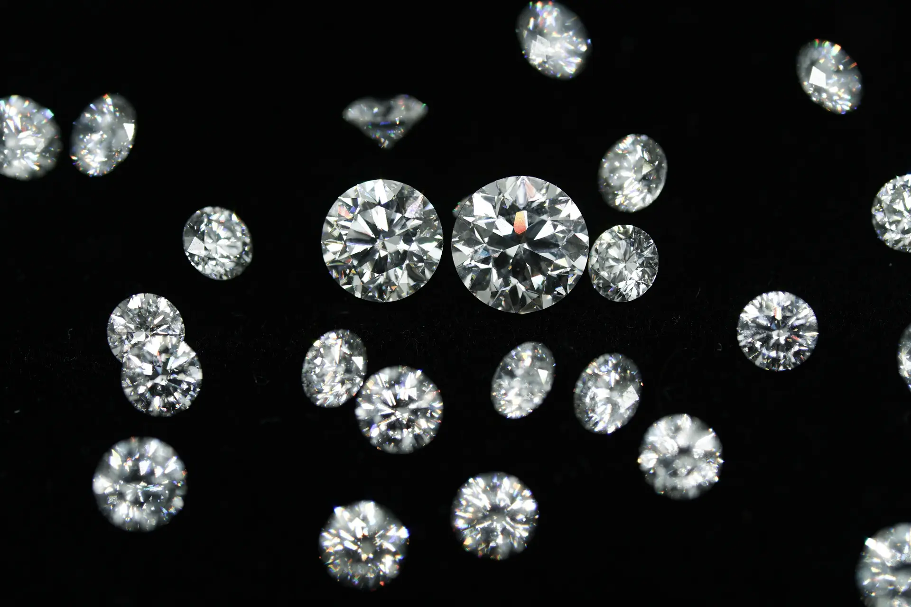

When a client asks how large their memorial diamond can be, the answer depends on a single variable: how much carbon they can provide. Carat weight is not a marketing choice — it is a direct function of sample mass, carbon concentration, and extraction yield. This guide provides the technical reference data B2B partners need to set realistic expectations and explain sizing to clients without guesswork.
TL;DR — Quick Summary
Memorial diamond carat weight is determined by available carbon mass, not by preference. Human hair contains ~30-40% carbon by mass; pet fur ~35%; botanical material ~40-50%. After processing losses of 70-80%, a 1 carat diamond requires approximately 6g of hair, 8-10g of pet fur, or 7-9g of dried botanical material. HPHT synthesis does not create carbon — it reorganizes what is provided.
Understanding Carat Weight vs. Physical Dimensions
Carat is a unit of mass, not size. One carat equals exactly 200 milligrams. A 1-carat round brilliant diamond measures approximately 6.4-6.5 mm in diameter. A 0.5-carat stone of the same proportions measures approximately 5.1-5.2 mm. The relationship between carat and visual size is not linear because mass scales with the cube of diameter.
For memorial diamonds, this distinction matters because clients often confuse "size" with "presence." A 0.5-carat diamond set in a well-designed ring appears more substantial than a loose 1-carat stone. B2B partners selling jewelry settings alongside memorial diamonds should understand this perceptual gap and use it to manage expectations.
The HPHT synthesis process does not compress or expand carbon. It reorganizes the crystal structure from graphite (hexagonal) to diamond (cubic). The final diamond mass equals the available carbon mass, minus trace impurities and polishing losses. There is no way to grow a 1-carat diamond from 0.5 carats of carbon. This is the first principle all sizing conversations must start from.
Carbon Content by Source Type
Not all biological materials contain the same carbon density. The extraction process must isolate carbon from keratin, cellulose, lipids, and mineral content. Understanding these compositional differences is essential for predicting yield.
Human Hair
Human hair is approximately 30-40% carbon by mass, with the remainder composed of nitrogen (15-17%), sulfur (3-5%), oxygen (5-6%), and hydrogen (6-7%), plus trace minerals. The carbon is bound in keratin protein structures, which must be decomposed through thermal oxidation and acid washing before graphitization.
Human Hair — Carbon Yield Analysis
- Carbon content (raw)~30-40% by mass
- Extraction + purification loss~65-75%
- Graphitization yield~85-90%
- HPHT synthesis conversion~95-98%
- Cutting and polishing loss~30-40%
- Net yield: carbon to diamond~3.3% of original sample mass
In practical terms: approximately 6 grams of human hair yields enough carbon for a 1-carat memorial diamond after extraction, graphitization, synthesis, and cutting. Smaller stones require proportionally less: a 0.5-carat diamond requires roughly 3-4 grams, and a 0.25-carat stone requires 1.5-2 grams. This is the baseline calculation for all human hair memorial diamonds.
Pet Fur
Pet fur — dog and cat hair — is structurally different from human hair. It is more medullated (contains a central pith or air channel), and the keratin composition differs. The carbon content is lower, typically 30-40% by mass, and the processing losses are higher due to the hollow fiber structure and increased lipid content.
Pet Fur — Carbon Yield Analysis
- Carbon content (raw)~30-40% by mass
- Extraction + purification loss~70-80%
- Graphitization yield~80-85%
- HPHT synthesis conversion~95-98%
- Cutting and polishing loss~30-40%
- Net yield: carbon to diamond~3-5% of original sample mass
Pet fur memorial diamonds require approximately 25-40% more starting material than human hair to achieve the same carat weight. A 1-carat pet memorial diamond typically requires 8-10 grams of fur, compared to approximately 6 grams of human hair. This is a critical data point for veterinary clinics and pet cremation services offering memorial diamonds to clients.
Botanical Material
Botanical carbon sources — dried flowers, leaves, tree bark, plant stems — are highly variable. The carbon content depends on the plant species, drying method, and cellulose-to-lignin ratio. Dried botanical material generally contains 40-50% carbon by mass, comparable to human hair, but the extraction process is more complex due to cellulose crystallinity and mineral content.
Botanical Material — Carbon Yield Analysis
- Carbon content (raw, dried)~40-50% by mass
- Extraction + purification loss~65-80%
- Graphitization yield~80-90%
- HPHT synthesis conversion~95-98%
- Cutting and polishing loss~30-40%
- Net yield: carbon to diamond~4-7% of original sample mass
Botanical memorial diamonds are less common in the pet aftercare market but have niche demand in wedding and commemorative applications. The variability in starting material means laboratories must perform preliminary carbon analysis before committing to a target carat weight. At BioGem Lab, we assess botanical samples before confirming order specifications.
Sample Size Requirements for Target Carat Weights
The following table provides the minimum sample quantities required for common memorial diamond carat weights. These are conservative estimates based on average yield rates and account for standard processing losses. Laboratories with optimized extraction protocols may achieve slightly higher yields.
| Target Carat | Human Hair | Pet Fur | Dried Botanical |
|---|---|---|---|
| 0.5 ct | 1.5-2 g | 2-3 g | 2-2.5 g |
| 0.5 ct | 3-4 g | 4-5 g | 3.5-4.5 g |
| 1.0 ct | ~6 g | 8-10 g | 7-9 g |
| 1.5 ct | 9-12 g | 12-15 g | 10-13 g |
| 2.0 ct | 12-16 g | 16-20 g | 14-18 g |
Production Recommendation — Minimum Sample Quantity
While smaller diamonds (0.25–0.5 ct) can theoretically be grown from as little as 1.5–4 grams of human hair, BioGem Lab recommends submitting a minimum of 6 grams regardless of target carat weight. Excess carbon improves synthesis stability, reduces failure risk from process interruptions or temperature fluctuations, and provides a buffer for cutting optimization. More starting material directly translates to higher yield consistency and lower remake rates.
These ranges are based on production experience. At BioGem Lab, standard extraction and synthesis protocols achieve a 1-carat diamond from approximately 6 grams of human hair. Pet fur and botanical material scale proportionally from this baseline based on their respective carbon densities.
Manufacturing Constraints on Maximum Carat Weight
Beyond the carbon supply limit, there are technical and economic constraints on how large a memorial diamond can practically be manufactured. Understanding these constraints helps B2B partners explain why some carat targets may not be feasible regardless of sample quantity.
HPHT Cell Assembly Volume
HPHT presses use a pyrophyllite cell assembly that contains the carbon source, diamond seed, and metal catalyst solvent. The cell has a finite volume. A single cell can hold only a certain mass of graphite, and larger diamonds require proportionally larger cells or longer synthesis times. Most memorial diamond laboratories operate standard-sized cells optimized for 0.25-1.0 carat stones. Growing a 2.0-carat diamond may require a specialized large-volume cell assembly, which increases per-cycle cost by 40-60%.
Synthesis Duration and Yield Risk
Larger diamonds require longer synthesis times. A 0.25-carat stone may synthesize in 18–25 days. A 1.0-carat stone requires 18-25 days. A 2.0-carat stone may require 60 days. The longer the synthesis window, the higher the risk of process interruption, temperature fluctuation, or catalyst degradation. Laboratories manage this risk by charging higher per-carat costs for large stones, not because the carbon costs more, but because the failure risk is higher.
Cutting Yield from Rough Crystal
Raw HPHT diamonds do not emerge as perfectly cut gems. They emerge as rough octahedra or cubes with inclusions, cracks, and growth ridges. The cutting process must remove 30-40% of the rough mass to produce a polished stone with proper proportions. A 2.0-carat rough crystal might yield only 1.2-1.4 carats of polished diamond. This loss ratio is constant regardless of size, meaning larger rough stones require proportionally more starting material to compensate.
Request Sample Requirement Sheets
Download detailed sample quantity guides for your clients, customized by carbon source type and target carat weight.
Contact LaboratoryChoosing the Right Carat for Your Business Model
B2B partners should align their memorial diamond offerings with their client base and margin structure. Not every carat weight makes sense for every business model.
Pet Cremation Services
Pet cremation services typically offer memorial diamonds as an add-on to cremation packages. The most common client request is a 0.25-0.5 carat stone set in a pendant or ring. This size range requires only 2-4 grams of pet fur — an amount most clients can easily provide. Offering 1.0-carat options is worthwhile for premium packages, but the sample requirement (8-10g) may exceed what a client has available, especially for small pets.
Veterinary Clinics
Veterinary clinics offering memorial diamonds as an end-of-life service should focus on the 0.25-0.5 carat range. These are emotionally meaningful without being prohibitively expensive. A 0.25-carat diamond set in a simple pendant provides a tangible memorial object that fits within typical veterinary aftercare budgets of $500-$1,500.
Memorial Retailers and Funeral Homes
Memorial retailers serving the human market can offer a broader range. A 1.0-carat memorial diamond is a significant and visually impressive stone, and most adult clients can provide 6 grams of hair without difficulty. Funeral homes may offer 0.5-carat options as standard and 1.0-carat as premium. The key is having clear sample requirement documentation so families know exactly what is needed when they make the decision.
Frequently Asked Questions
How much hair is needed for a 1 carat memorial diamond?
For a 1 carat memorial diamond, approximately 6 grams of human hair is required. This provides sufficient carbon content after purification, accounting for processing losses during extraction and graphitization. Pet fur requires 8-10 grams due to lower carbon density per gram.
Is there a minimum sample quantity regardless of target size?
Yes. BioGem Lab recommends submitting a minimum of 6 grams of human hair (or 8-10 grams of pet fur) regardless of target carat weight. While smaller diamonds can theoretically be grown from less material, excess carbon improves synthesis stability, reduces failure risk from process interruptions, and provides a buffer for cutting optimization. More starting material directly translates to higher yield consistency and lower remake rates.
What is the maximum carat weight possible for a memorial diamond?
Practical memorial diamonds typically range from 0.25 to 2.0 carats. While HPHT synthesis can theoretically produce larger stones, the amount of biological carbon required becomes impractical for commemorative purposes. A 2.0 carat memorial diamond requires approximately 12-16 grams of purified human hair carbon, which is at the upper limit of what most clients can supply.
Does pet fur produce smaller diamonds than human hair from the same weight?
Yes. Pet fur contains less carbon by mass than human hair due to differences in keratin structure and medullation. On average, 1 gram of pet fur yields 20-30% less usable carbon than 1 gram of human hair. Therefore, pet memorial diamonds typically require 25-40% more starting material to achieve the same target carat weight.
Can a memorial diamond be grown larger than the available carbon supply?
No. HPHT memorial diamond synthesis requires the carbon to originate from the biological sample. The final diamond mass cannot exceed the available carbon content, minus processing losses. A laboratory cannot supplement with generic carbon and still claim the diamond is from the memorial source. B2B partners should communicate realistic size expectations to clients based on sample quantity.
Li Lihua — Chief Scientist
Patent inventor ZL 201010565778.9. View profile →
Ready to Partner with BioGem Lab?
Learn about our white-label and OEM manufacturing programs for memorial diamond businesses.
Explore Partnership →Related Articles
Patent-backed carbon extraction technology. Patent No. ZL 201010565778.9